Example 2 : Three samples
Contents
Example 2 : Three samples#
pH vs Fe vs Fe
import sys
# caution: path[0] is reserved for script path (or '' in REPL)
sys.path.insert(1, '.')
from POTFUL import POTFUL
POT = POTFUL()
POTFUL
StX;. @:X;.
: 88S ;X88@ ..
8888X .X88X;. 8S @
;88 :.. 88 :.: X8X
.;SS8. 8888@ .X88Xt..
::. .88 :.. 88 ..
.. :88X. . 8X8.
:;. ..;:. t88%8 8:
.. ... ;SS888XX88;
;X%t8.8.8.8.8.8.8.8.8.8.8.8888@8888X8;.
888@X8@@@@@@@@@@@@@@@@@@@@@88SX@@t;...
@8@8t888@88@@888@888@888@;8@88:::..
%88@%;;:.:::.:::::::::::%888Xt. .
.888@t@;;:;:;;;;;:;;;;%8;88t8
:88@8@8888888888888888@8888
;Xt8888@8@8@888@888@88888.
.:%S88888888888888888S%;:.
..:;;;;t;t;t;t;;:....
................
. .
LOAD Auxiliary Files#
POT.Load_Auxiliary_Files(WGCNA_COLOR_MAP="Auxiliary_File/WGCNA_COLOR_MAP.csv",
TF_Targets="Auxiliary_File/masterTF-target.txt",
TF_Family="Auxiliary_File/Arabidopsis_TF and family.csv")
{'TF_Family': 'Auxiliary_File/Arabidopsis_TF and family.csv',
'TF_Targets': 'Auxiliary_File/masterTF-target.txt',
'WGCNA_COLOR_MAP': 'Auxiliary_File/WGCNA_COLOR_MAP.csv'}
🍲Auxiliary File None
{'TF_Family': 'Auxiliary_File/Arabidopsis_TF and family.csv',
'TF_Targets': 'Auxiliary_File/masterTF-target.txt',
'WGCNA_COLOR_MAP': 'Auxiliary_File/WGCNA_COLOR_MAP.csv'}
LOAD ‘Fe’ Files#
!pwd
/Users/nileshkr/Desktop/2022_Fall/Frontires_new_data/POTFUL_Demo/POTFUL_Tutorial
POT.Load_Files(Sample_name="Fe",
NODE_File="Data/2_WGCNA_Data/WGCNA_GSE10576_Fe/CytoscapeInput-nodes-Fe_Anno.txt",
EDGE_File="Data/2_WGCNA_Data/WGCNA_GSE10576_Fe/CytoscapeInput-edges-Fe_Anno.txt",
GRN_File="Data/3_GRN_data/GSE10576_Fe_arboreto_regnet_small.tsv")
Fe
🍲Sample Fe
Data/3_GRN_data/GSE10576_Fe_arboreto_regnet_small.tsv
defaultdict(<class 'dict'>,
{'Fe': {'GRN': 'Data/3_GRN_data/GSE10576_Fe_arboreto_regnet_small.tsv',
'WGCNA': {'EDGE': 'Data/2_WGCNA_Data/WGCNA_GSE10576_Fe/CytoscapeInput-edges-Fe_Anno.txt',
'NODE': 'Data/2_WGCNA_Data/WGCNA_GSE10576_Fe/CytoscapeInput-nodes-Fe_Anno.txt'}}})
🍲 Files None
defaultdict(<class 'dict'>,
{'Fe': {'GRN': 'Data/3_GRN_data/GSE10576_Fe_arboreto_regnet_small.tsv',
'WGCNA': {'EDGE': 'Data/2_WGCNA_Data/WGCNA_GSE10576_Fe/CytoscapeInput-edges-Fe_Anno.txt',
'NODE': 'Data/2_WGCNA_Data/WGCNA_GSE10576_Fe/CytoscapeInput-nodes-Fe_Anno.txt'}}})
LOAD ‘pH’ Files#
POT.Load_Files(Sample_name="pH",
NODE_File="Data/2_WGCNA_Data/WGCNA_GSE30166_pH/CytoscapeInput-nodes-pH_Anno.txt",
EDGE_File="Data/2_WGCNA_Data/WGCNA_GSE30166_pH/CytoscapeInput-edges-pH_Anno.txt",
GRN_File="Data/3_GRN_data/GSE30166_pH_regnet_small.tsv")
pH
🍲Sample pH
Data/3_GRN_data/GSE30166_pH_regnet_small.tsv
defaultdict(<class 'dict'>,
{'Fe': {'GRN': 'Data/3_GRN_data/GSE10576_Fe_arboreto_regnet_small.tsv',
'WGCNA': {'EDGE': 'Data/2_WGCNA_Data/WGCNA_GSE10576_Fe/CytoscapeInput-edges-Fe_Anno.txt',
'NODE': 'Data/2_WGCNA_Data/WGCNA_GSE10576_Fe/CytoscapeInput-nodes-Fe_Anno.txt'}},
'pH': {'GRN': 'Data/3_GRN_data/GSE30166_pH_regnet_small.tsv',
'WGCNA': {'EDGE': 'Data/2_WGCNA_Data/WGCNA_GSE30166_pH/CytoscapeInput-edges-pH_Anno.txt',
'NODE': 'Data/2_WGCNA_Data/WGCNA_GSE30166_pH/CytoscapeInput-nodes-pH_Anno.txt'}}})
🍲 Files None
defaultdict(<class 'dict'>,
{'Fe': {'GRN': 'Data/3_GRN_data/GSE10576_Fe_arboreto_regnet_small.tsv',
'WGCNA': {'EDGE': 'Data/2_WGCNA_Data/WGCNA_GSE10576_Fe/CytoscapeInput-edges-Fe_Anno.txt',
'NODE': 'Data/2_WGCNA_Data/WGCNA_GSE10576_Fe/CytoscapeInput-nodes-Fe_Anno.txt'}},
'pH': {'GRN': 'Data/3_GRN_data/GSE30166_pH_regnet_small.tsv',
'WGCNA': {'EDGE': 'Data/2_WGCNA_Data/WGCNA_GSE30166_pH/CytoscapeInput-edges-pH_Anno.txt',
'NODE': 'Data/2_WGCNA_Data/WGCNA_GSE30166_pH/CytoscapeInput-nodes-pH_Anno.txt'}}})
LOAD ‘Sulfur’ Files#
POT.Load_Files(Sample_name="Sulfur",
NODE_File="Data/2_WGCNA_Data/WGCNA_GSE30166_S/CytoscapeInput-nodes-sulfur_Anno.txt",
EDGE_File="Data/2_WGCNA_Data/WGCNA_GSE30166_S/CytoscapeInput-edges-sulfur_Anno.txt",
GRN_File="Data/3_GRN_data/GSE30166_Sulfur_regnet_small.tsv")
Sulfur
🍲Sample Sulfur
Data/3_GRN_data/GSE30166_Sulfur_regnet_small.tsv
defaultdict(<class 'dict'>,
{'Fe': {'GRN': 'Data/3_GRN_data/GSE10576_Fe_arboreto_regnet_small.tsv',
'WGCNA': {'EDGE': 'Data/2_WGCNA_Data/WGCNA_GSE10576_Fe/CytoscapeInput-edges-Fe_Anno.txt',
'NODE': 'Data/2_WGCNA_Data/WGCNA_GSE10576_Fe/CytoscapeInput-nodes-Fe_Anno.txt'}},
'Sulfur': {'GRN': 'Data/3_GRN_data/GSE30166_Sulfur_regnet_small.tsv',
'WGCNA': {'EDGE': 'Data/2_WGCNA_Data/WGCNA_GSE30166_S/CytoscapeInput-edges-sulfur_Anno.txt',
'NODE': 'Data/2_WGCNA_Data/WGCNA_GSE30166_S/CytoscapeInput-nodes-sulfur_Anno.txt'}},
'pH': {'GRN': 'Data/3_GRN_data/GSE30166_pH_regnet_small.tsv',
'WGCNA': {'EDGE': 'Data/2_WGCNA_Data/WGCNA_GSE30166_pH/CytoscapeInput-edges-pH_Anno.txt',
'NODE': 'Data/2_WGCNA_Data/WGCNA_GSE30166_pH/CytoscapeInput-nodes-pH_Anno.txt'}}})
🍲 Files None
defaultdict(<class 'dict'>,
{'Fe': {'GRN': 'Data/3_GRN_data/GSE10576_Fe_arboreto_regnet_small.tsv',
'WGCNA': {'EDGE': 'Data/2_WGCNA_Data/WGCNA_GSE10576_Fe/CytoscapeInput-edges-Fe_Anno.txt',
'NODE': 'Data/2_WGCNA_Data/WGCNA_GSE10576_Fe/CytoscapeInput-nodes-Fe_Anno.txt'}},
'Sulfur': {'GRN': 'Data/3_GRN_data/GSE30166_Sulfur_regnet_small.tsv',
'WGCNA': {'EDGE': 'Data/2_WGCNA_Data/WGCNA_GSE30166_S/CytoscapeInput-edges-sulfur_Anno.txt',
'NODE': 'Data/2_WGCNA_Data/WGCNA_GSE30166_S/CytoscapeInput-nodes-sulfur_Anno.txt'}},
'pH': {'GRN': 'Data/3_GRN_data/GSE30166_pH_regnet_small.tsv',
'WGCNA': {'EDGE': 'Data/2_WGCNA_Data/WGCNA_GSE30166_pH/CytoscapeInput-edges-pH_Anno.txt',
'NODE': 'Data/2_WGCNA_Data/WGCNA_GSE30166_pH/CytoscapeInput-nodes-pH_Anno.txt'}}})
Define Samples#
Samples = POT.Samples
for i in range(len(Samples)):
print(i, Samples[i])
0 Fe
1 pH
2 Sulfur
Create GMT file for both samples for enrichment analysis#
POT.WGCNA_Bucket_GMT()
GMT_base/POTFUL-Fe.gmt 5850
GMT_base/POTFUL-pH.gmt 2285
GMT_base/POTFUL-Sulfur.gmt 8751
for i in range(len(Samples)):
print((POT.File[Samples[i]]['GMT']))
GMT_base/POTFUL-Fe.gmt
GMT_base/POTFUL-pH.gmt
GMT_base/POTFUL-Sulfur.gmt
Plot WGCNA module barplot (Fe)#
# POT.Plots[Samples[0]]['WGCNA_BarPlot']
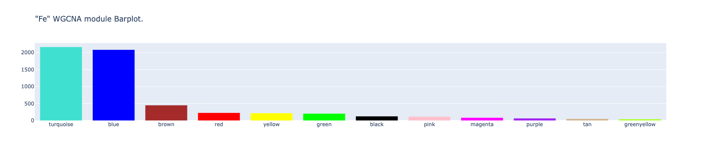
Plot WGCNA module barplot (pH)#
# POT.Plots[Samples[1]]['WGCNA_BarPlot']
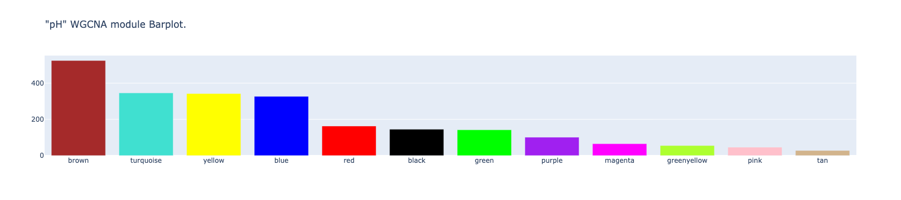
Plot WGCNA module barplot (Sulfur)#
# POT.Plots[Samples[2]]['WGCNA_BarPlot']
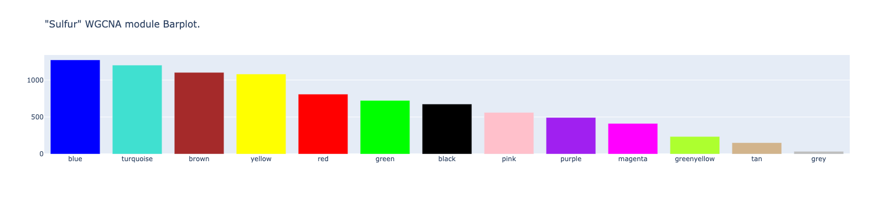
WGCNA module wise enrichment Fe vs pH#
POT.WGCNA_Module_Enrichment(Samples[0], Samples[1])
print(POT.Data["Enrichment_Dotplot"])
# POT.Plots["Enrichment_Dotplot"]
Fe pH
Total Number of genes in 7045
Gene_set (pH) Term (Fe) Overlap P-value Adjusted P-value \
7 brown turquoise 242/2168 1.300397e-14 1.170358e-13
0 blue blue 128/2086 9.973270e-05 4.986635e-04
0 purple blue 51/2086 7.429430e-06 1.485886e-05
1 yellow blue 205/2086 7.088378e-33 4.253027e-32
2 black turquoise 66/2168 1.151070e-04 3.453210e-04
Odds Ratio Significance Genes
7 1.923962 *** 251065_at;249188_at;249058_at;258683_at;258792...
0 1.531016 *** 247505_at;253697_at;254578_at;253684_at;253050...
0 2.424015 *** 259678_at;263610_at;256143_at;252625_at;256862...
1 3.552455 *** 258145_at;259525_at;246011_at;263398_at;257313...
2 1.881449 *** 248271_at;247407_at;259228_at;259980_at;249535...
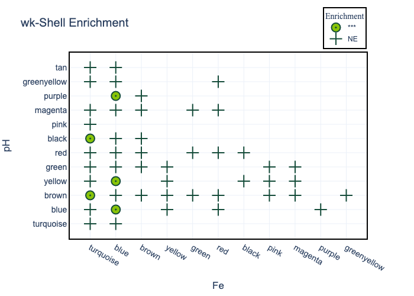
WGCNA module wise enrichment Fe vs Sulfur#
POT.WGCNA_Module_Enrichment(Samples[0], Samples[2])
Fe Sulfur
Total Number of genes in 11778
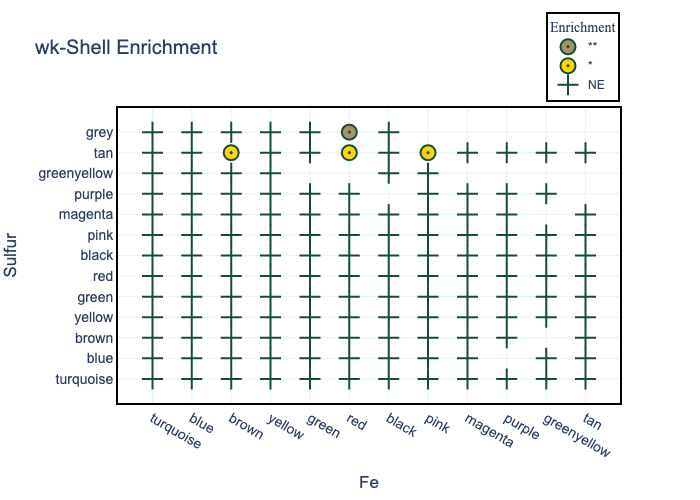
WGCNA module wise enrichment pH vs Sulfur#
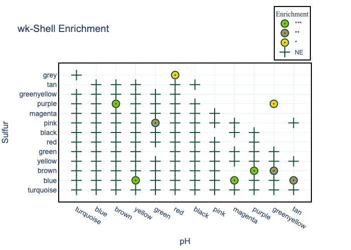
TF Network overlap#
POT.merge_TF_reg(Samples[0]) # Fe
POT.merge_TF_reg(Samples[1]) # pH
POT.merge_TF_reg(Samples[2]) # Sulfur
Fe Auxiliary_File/masterTF-target.txt Data/3_GRN_data/GSE10576_Fe_arboreto_regnet_small.tsv
Total number of TFT pairs in Auxiliary_File/masterTF-target.txt :2357032
Scaled Dataset Using Pandas
Total number of TFT pairs in Data/3_GRN_data/GSE10576_Fe_arboreto_regnet_small.tsv :607
Total number of common pairs:607
Total number of common pairs:607
pH Auxiliary_File/masterTF-target.txt Data/3_GRN_data/GSE30166_pH_regnet_small.tsv
Total number of TFT pairs in Auxiliary_File/masterTF-target.txt :2357032
Scaled Dataset Using Pandas
Total number of TFT pairs in Data/3_GRN_data/GSE30166_pH_regnet_small.tsv :281
Total number of common pairs:281
Total number of common pairs:281
Sulfur Auxiliary_File/masterTF-target.txt Data/3_GRN_data/GSE30166_Sulfur_regnet_small.tsv
Total number of TFT pairs in Auxiliary_File/masterTF-target.txt :2357032
Scaled Dataset Using Pandas
Total number of TFT pairs in Data/3_GRN_data/GSE30166_Sulfur_regnet_small.tsv :232
Total number of common pairs:232
Total number of common pairs:232
TF Co-expression Network overlap#
POT.merge_reg_coexp(Samples[0])
POT.merge_reg_coexp(Samples[1])
POT.merge_reg_coexp(Samples[2])
Data/2_WGCNA_Data/WGCNA_GSE10576_Fe/CytoscapeInput-edges-Fe_Anno.txt
Total number of coexpressed combo-pairs:114684
Total number of common pairs:607
Total number of common pairs:607
POTFUL_OUT/Fe_Coexp_GRN.tsv DiGraph with 426 nodes and 607 edges
Data/2_WGCNA_Data/WGCNA_GSE30166_pH/CytoscapeInput-edges-pH_Anno.txt
Total number of coexpressed combo-pairs:49279
Total number of common pairs:281
Total number of common pairs:281
POTFUL_OUT/pH_Coexp_GRN.tsv DiGraph with 201 nodes and 281 edges
Data/2_WGCNA_Data/WGCNA_GSE30166_S/CytoscapeInput-edges-sulfur_Anno.txt
Total number of coexpressed combo-pairs:64747
Total number of common pairs:232
Total number of common pairs:232
POTFUL_OUT/Sulfur_Coexp_GRN.tsv DiGraph with 238 nodes and 232 edges
Network centrality analysis#
POT.network_centrality(Samples[0])
POT.network_centrality(Samples[1])
POT.network_centrality(Samples[2])
DiGraph with 426 nodes and 607 edges
DiGraph with 426 nodes and 607 edges
Degree Dict True
Betweenness Dict True
Degree Dict True
clust Dict True
DiGraph with 201 nodes and 281 edges
DiGraph with 201 nodes and 281 edges
Degree Dict True
Betweenness Dict True
Degree Dict True
clust Dict True
DiGraph with 238 nodes and 232 edges
DiGraph with 238 nodes and 232 edges
Degree Dict True
Betweenness Dict True
Degree Dict True
clust Dict True
Save GraphML file#
POT.generate_graphml_out(Samples[0])
POT.generate_graphml_out(Samples[1])
POT.generate_graphml_out(Samples[2])
DiGraph with 426 nodes and 607 edges
DiGraph with 201 nodes and 281 edges
DiGraph with 238 nodes and 232 edges
Generate network visualization html file#
POT.Graph_vis(Samples[0])
POT.Graph_vis(Samples[1])
POT.Graph_vis(Samples[2])
Display html graph file (pH)#
# POT.Plots[Samples[0]]['Network_Viz'].show('Fe.html')
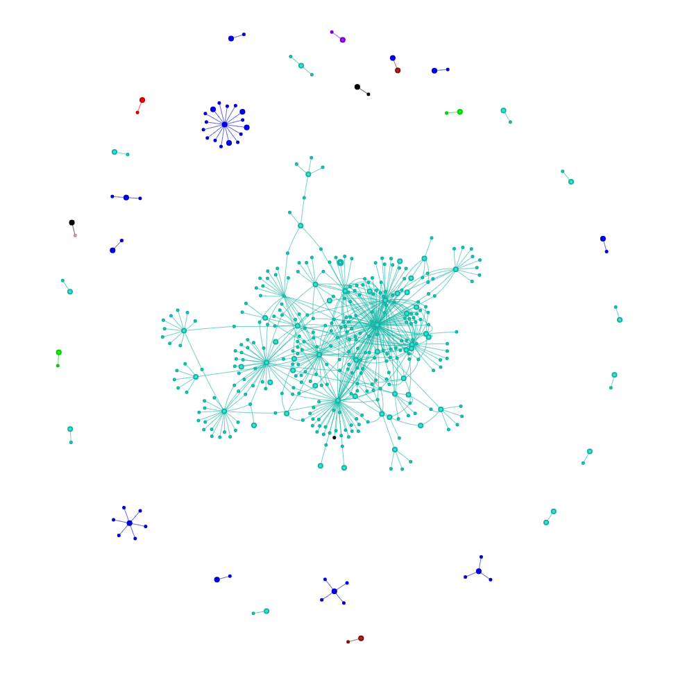
# POT.Plots[Samples[1]]['Network_Viz'].show('pH.html')
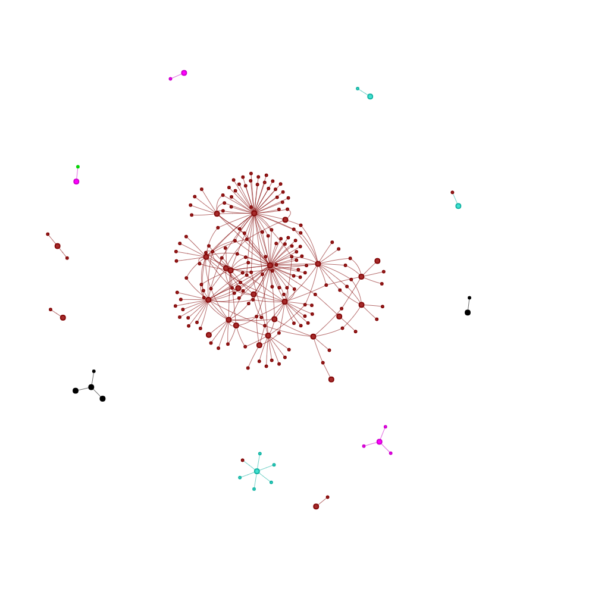
Display html graph file (pH)#
# POT.Plots[Samples[2]]['Network_Viz'].show('Sulfur.html')
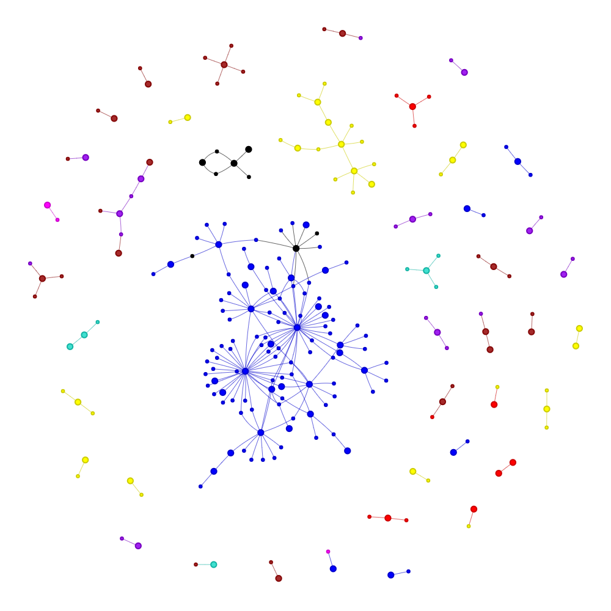
POT.netowork_overlap(Samples[0], Samples[1])
POT.netowork_overlap(Samples[0], Samples[2])
POT.netowork_overlap(Samples[1], Samples[2])
🍲 👌 There are 44 nodes overlapping between pair of Graphs
{'AT5G35735', 'AT1G26380', 'AT4G37370', 'AT1G02520', 'AT1G18570', 'AT5G60710', 'AT1G69790', 'AT1G32870', 'AT3G12820', 'AT3G25610', 'AT5G22270', 'AT1G07000', 'AT2G18690', 'AT5G11210', 'AT2G38470', 'AT5G42830', 'AT3G12720', 'AT2G47000', 'AT2G47260', 'AT4G26200', 'AT5G05190', 'AT1G26410', 'AT2G30250', 'AT3G08770', 'AT1G59500', 'AT1G13340', 'AT1G03660', 'AT5G12330', 'AT5G18270', 'AT2G43000', 'AT5G26920', 'AT2G38860', 'AT3G44720', 'AT2G28570', 'AT1G33420', 'AT1G01060', 'AT1G34180', 'AT4G28460', 'AT1G74590', 'AT3G59080', 'AT5G57220', 'AT2G38340', 'AT1G44130', 'AT4G18880'}
🍲 👌 There are 27 nodes overlapping between pair of Graphs
{'AT1G19000', 'AT4G23810', 'AT1G02520', 'AT1G18570', 'AT5G25810', 'AT3G12820', 'AT2G05940', 'AT4G19160', 'AT4G30490', 'AT2G38470', 'AT5G40590', 'AT3G11280', 'AT2G40340', 'AT1G19850', 'AT3G55980', 'AT4G24570', 'AT3G47500', 'AT2G02130', 'AT1G51700', 'AT4G22690', 'AT5G25830', 'AT2G45290', 'AT4G34590', 'AT3G49530', 'AT5G38820', 'AT5G13910', 'AT2G44940'}
🍲 👌 There are 16 nodes overlapping between pair of Graphs
{'AT5G13080', 'AT5G28770', 'AT3G12820', 'AT1G74840', 'AT2G15890', 'AT1G27730', 'AT3G23250', 'AT1G02520', 'AT1G25400', 'AT1G18570', 'AT4G37390', 'AT2G38470', 'AT5G24490', 'AT1G80920', 'AT1G28330', 'AT5G25930'}
Display html graph file (Fe and pH overlap)#
# POT.Plots['Fe_pH_Overlap_Network_Viz'].show('Fe_pH_Overlapping_network.html')
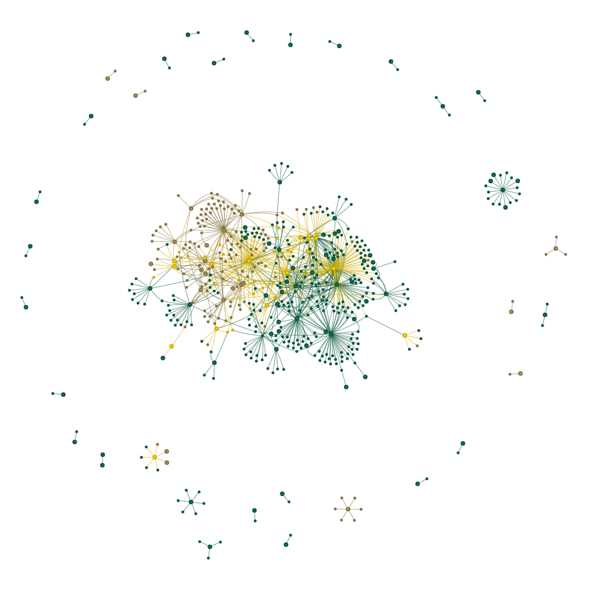
Display html graph file (Fe and Sulfur overlap)#
# POT.Plots['Fe_Sulfur_Overlap_Network_Viz'].show('Fe_Sulfur_Overlap_Network_Viz.html')
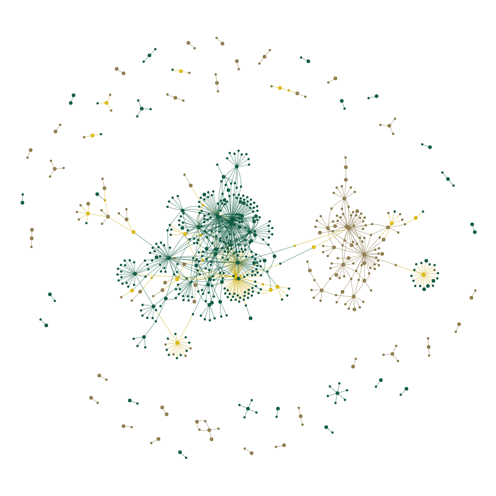
Display html graph file (pH and Sulfur overlap)#
# POT.Plots['Overlap_Network_Viz'].show('Overlap.html')
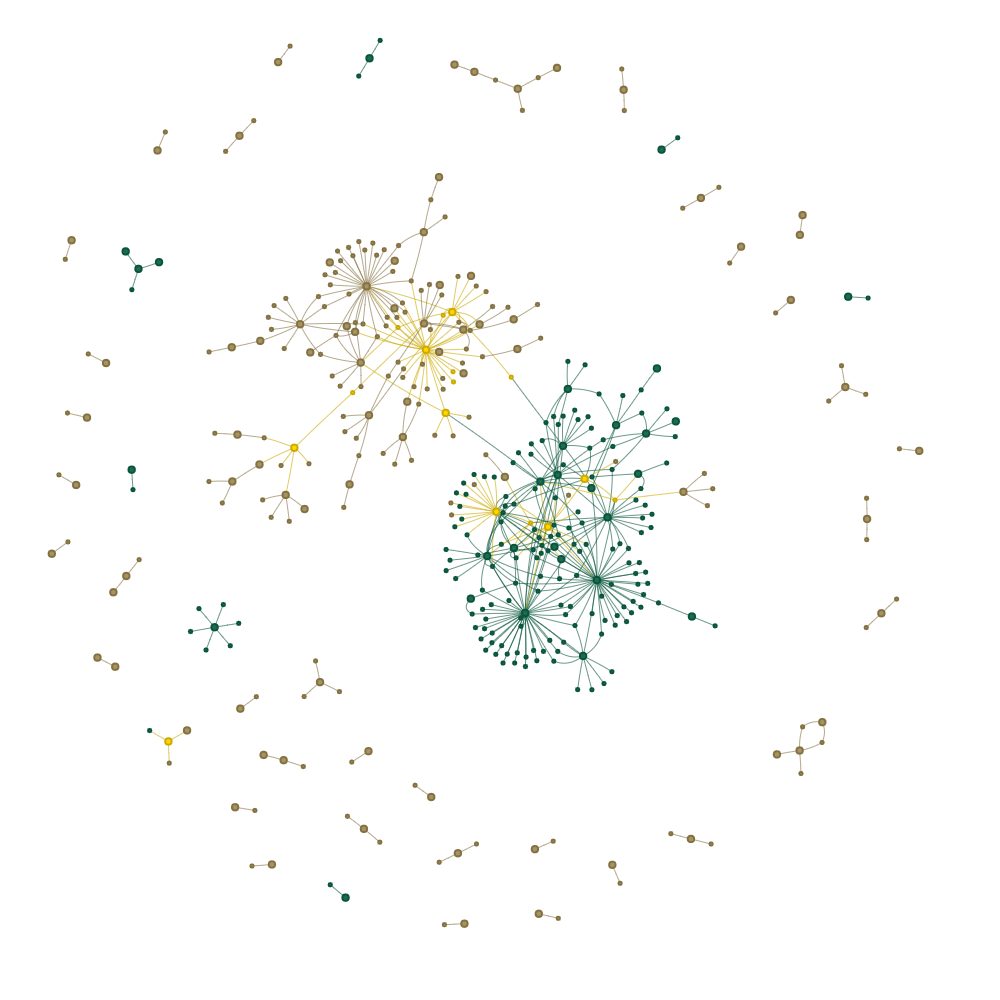
List all plots#
list(POT.Plots)
['Fe',
'pH',
'Sulfur',
'Enrichment_Dotplot',
'Fe_pH_Overlap_Network_Viz',
'Fe_Sulfur_Overlap_Network_Viz',
'pH_Sulfur_Overlap_Network_Viz']
### Print POT structure
# dict(POT.Data)
import session_info
session_info.show(html=False)
-----
POTFUL 0.1.0
session_info 1.0.0
-----
IPython 8.5.0
jupyter_client 7.3.5
jupyter_core 4.11.1
jupyterlab 3.4.7
notebook 6.4.12
-----
Python 3.9.13 | packaged by conda-forge | (main, May 27 2022, 17:00:52) [Clang 13.0.1 ]
macOS-12.6-x86_64-i386-64bit
-----
Session information updated at 2022-09-22 12:02